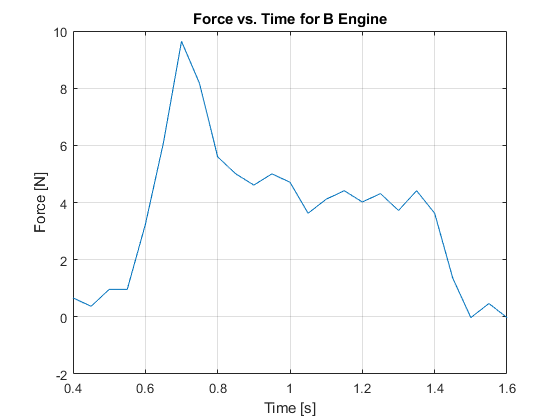
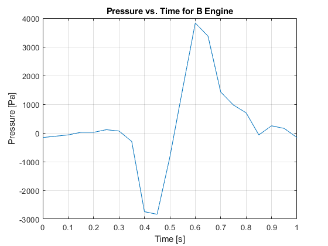
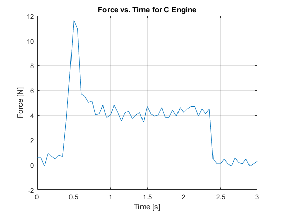
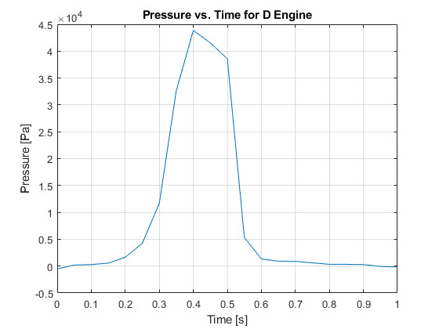

Contents
clear all; close all; clc;
addpath('C:\Users\User\Desktop\Rocket Data');
bTime = xlsread('bengine.xlsx', 'Voltage - Dev1_ai0', 'A9:A209');
bForce = xlsread('bengine.xlsx', 'Voltage - Dev1_ai0', 'B9:B209');
bPressur = xlsread('bengine.xlsx', 'Voltage - Dev1_ai1', 'B9:B209');
cTime = xlsread('Cengine.xlsx', 'Voltage - Dev1_ai0', 'A9:A209');
cForce = xlsread('Cengine.xlsx', 'Voltage - Dev1_ai0', 'B9:B209');
cPressur = xlsread('Cengine.xlsx', 'Voltage - Dev1_ai1', 'B9:B209');
dTime = xlsread('d engine.xlsx', 'Voltage - Dev1_ai0', 'A9:A209');
dForce = xlsread('d engine.xlsx', 'Voltage - Dev1_ai0', 'B9:B209');
dPressur = xlsread('d engine.xlsx', 'Voltage - Dev1_ai1', 'B9:B209');
bPressur = (bPressur - mean(bPressur(end - 50:end))).*20;
bPressur = bPressur.*6894.757;
cPressur = (cPressur - mean(cPressur(end - 50:end))).*20;
cPressur = cPressur.*6894.757;
dPressur = (dPressur - mean(dPressur(end - 50:end))).*20;
dPressur = dPressur.*6894.757;
bForce = ((bForce - mean(bForce(end - 10:end)))./.015).*4.5;
cForce = ((cForce - mean(cForce(end - 10:end)))./.015).*4.5;
dForce = ((dForce - mean(dForce(end - 10:end)))./.015).*4.5;
d_throatd = .150*.0254;
c_throatd = .1375*.0254;
b_throatd = .125*.0254;
figure()
plot(bTime - 1.5, bForce);
xlabel('Time [s]'); ylabel('Force [N]'); grid on;
title('Force vs. Time for B Engine')
xlim([0.4 1.6])
figure()
plot(bTime - 1.7, bPressur);
xlabel('Time [s]'); ylabel('Pressure [Pa]'); grid on;
title('Pressure vs. Time for B Engine')
xlim([0 1])
figure()
plot(cTime - 2, cForce);
xlabel('Time [s]'); ylabel('Force [N]'); grid on;
title('Force vs. Time for C Engine')
xlim([0 3])
figure()
plot(cTime - 2, cPressur);
xlabel('Time [s]'); ylabel('Pressure [Pa]'); grid on;
title('Pressure vs. Time for C Engine')
xlim([0 1.5])
figure()
plot(dTime - 1.7, dForce);
xlabel('Time [s]'); ylabel('Force [N]'); grid on;
title('Force vs. Time for D Engine')
xlim([0 2.5])
figure()
plot(dTime - 1.8, dPressur);
xlabel('Time [s]'); ylabel('Pressure [Pa]'); grid on;
title('Pressure vs. Time for D Engine')
xlim([0 1])
  



Isp calc
bForce = bForce(37:61);
cForce = cForce(48:90);
dForce = dForce(40:80);
bMean = mean(bForce);
cMean = mean(cForce);
dMean = mean(dForce);
tot_thrustd = 20;
tot_thrustc = 10;
tot_thrustb = 5;
max_Pb = max(bPressur);
max_Pc = max(cPressur);
max_Pd = max(dPressur);
d_throatA = ((d_throatd/2)^2)*pi;
c_throatA = ((c_throatd/2)^2)*pi;
b_throatA = ((b_throatd/2)^2)*pi;
m_dotb = (.0056/.9);
m_dotc = (.0198/1.9);
m_dotd = (.0211/1.7);
ve_b = (bMean-(b_throatA*(max_Pb)))/m_dotb;
ve_c = (cMean-(c_throatA*(max_Pc)))/m_dotc;
ve_d = (dMean-(d_throatA*(max_Pd)))/m_dotd;
Ispb1 = bMean/(m_dotb*9.81);
Ispc1 = cMean/(m_dotc*9.81);
Ispd1 = dMean/(m_dotd*9.81);
Ispb2 = ve_b/9.81;
Ispc2 = ve_c/9.81;
Ispd2 = ve_d/9.81;
rd = 1/(((45.2/1000)*9.81)/dMean);
rc = 1/(((24.0/1000)*9.81)/cMean);
rb = 1/(((15.6/1000)*9.81)/bMean);